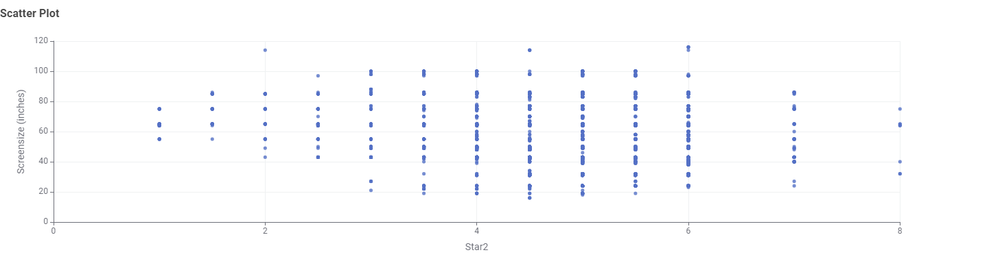

Television
Televisions are common in almost every Australian household.
According to the collected data from suppliers, energy consumption of television varies based on:
- Brand
- Screen Technology
- Star Rating
TV Energy Insights: Data Story
This section presents the findings based on the Australian Government dataset on Energy Rating Data for television. The goal is to help the Australian consumers to visualise the data in an user-friendly way which aid in decision-making about technology.
Chart 1: What television screen technologies are available in Australia?
LCD (LED) is the most frequent TV screen technology in Australia, whereas OLED is the least
Chart 2: What screen sizes are most frequent?
55 inches, 65 inches and 75 inches are the most frequent screen sizes
Chart 3: Which brands have the greatest number of different models?
SAMSUNG ELECTRONICS, KOGAN and LG are the brands which have the greatest number of different models
Chart 4: Which screen technology consumes the least power?
LCD consumes the least amount of power, whereas OLED consumes the most
Chart 5: How does screen size affect the power use?
The larger the screen size, the higher the power use
Chart 6: How does star rating related to screen size?
There is no relationship between star rating and screen size
Conclusion
It is recommended for consumers to select a television which has a balance in screen technology, screen size, brand and power consumption. A 55 inches LCD (LED) television is the most frequent and energy-efficient.